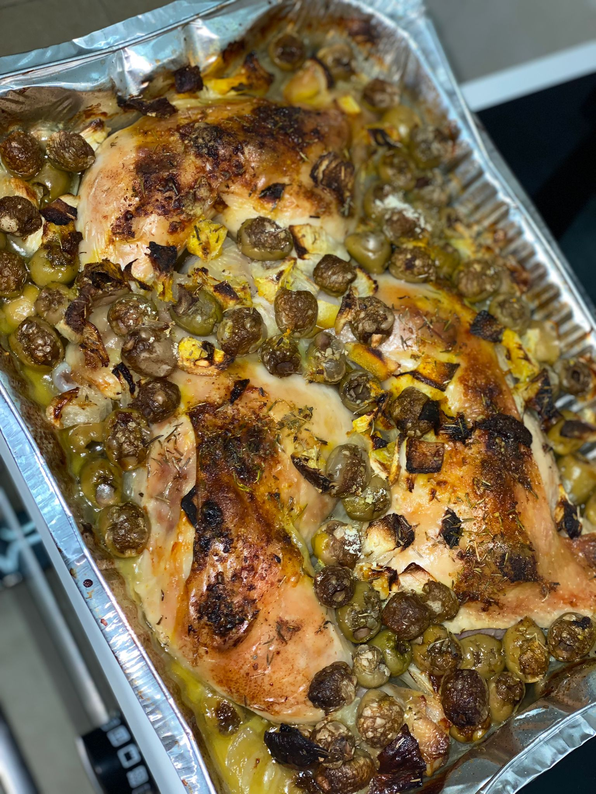

Challot
Ingredients
- 4 tbsp. dry yeast
- 2 tbsp. sugar
- 5 cups very warm water, divided
- 5 large eggs
- 1¼ cups honey
- 1 cup oil (canola or light olive oil)
- 2 tbsp. salt
- Approximately 18 cups flour
Receipe
- In a very large bowl, dissolve yeast and sugar in 2 cups warm water
and let sit about 15–20 minutes until thick and frothy.
- Add eggs, honey, oil, salt, remaining three cups of water, and half the
flour.
- Mix until a loose batter forms. Add the rest of the flour a couple
of cups at a time. You may not need all 18 cups of flour, so go slowly
towards the end.
- Alternatively, you may need slightly more. The dough should be soft
but not sticky. Once the dough has enough flour, knead it for a couple
of minutes. I do this in the bowl. (You can do this recipe by hand or with a mixer.)
- Cover the dough with a wet towel or plastic wrap and put it in a warm place to
rise for about 1½ hours. Dough should double in size.
- Punch the dough down and let it rest for 10 minutes.
- Divide into 6 equal pieces. Braid according to pictures and directions above.
Place loaves on lightly greased pans and let rise for another 40 minutes. Beat the
egg with the honey and vanilla and gently brush over the loaves. Bake at 375° F for
approximately 45 minutes. Loaves should be golden on top, and firm on the bottom.
Click here to see a tutorial
Eggplant
Receipe
- Put 1 big eggplant in the oven at 200 degress celcius for 1 hour.
- Remove the skin of the eggplant.
- Mix it with some mayo, garlic, olive oil and salt.
Olives chicken

Receipe
- Put chicken legs in a baking dish.
- Add one oignon, green olives and some garlic.
- Spread some chicken powder, tumeric, cumin and coriander.
- Put in the oven under grill at 200 degrees celsius for 1 hour.
Couscous

Receipe
- Brown one oignon in olive oil, add some chicken and mix them together.
- Add some tumeric, paprika, coriander and tomato paste.
- Add water to the top.
- Add zuchinni, potatoes, sweet potatoe, carrots and chickpeas.
- Boil it for one hour.
Meat Balls
Receipe
- In a large pot heat some olive oil over medium-low heat.
- Once hot, add the onion and garlic, sauté until onions are translucent.
- Stir in the tomato paste and cook for 1 minute.
- Stir in the crushed tomatoes, salt, and pepper, cook it for 30 minutes.
- In a large bowl, mix round beef, one egg, and seasonning like cumin and garlic powder.
- Mix it and create balls, put them in the sauce and cook them for 20 minutes.